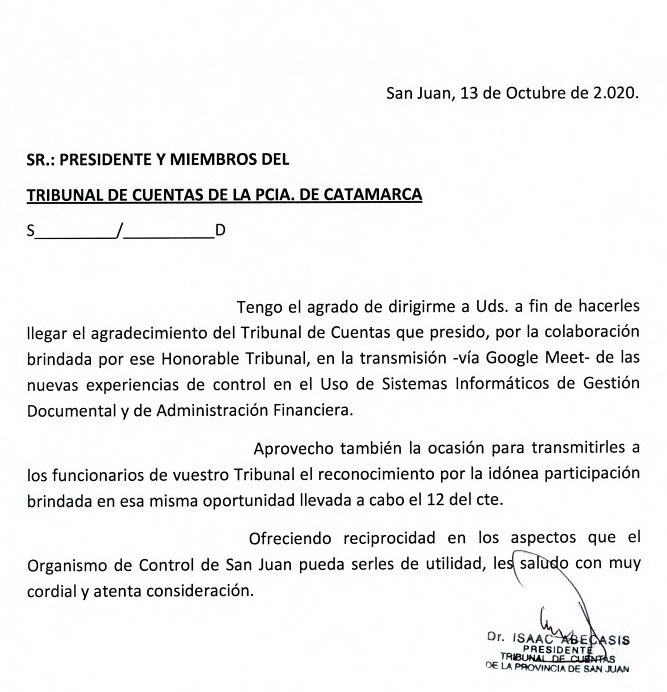

El 12 de octubre pasado, nuestro Tribunal participó de una jornada de Colaboración Institucional con el Tribunal de Cuentas de la Provincia de San Juan. En el evento, se expusieron los avances y la experiencia en el Control, en ambientes con Sistemas Informáticos de Gestión Documental y de Administración Financiera.
El día 12 de Octubre pasado, el Tribunal de Cuentas de la Provincia de Catamarca, participó de una Jornada de Colaboración Institucional, solicitada por el Tribunal de Cuentas de la Provincia de San Juan, con el objeto de que nuestro Organismo exponga sus avances y experiencia en materia de modernización y control en entornos informatizados. Dicha solicitud, se cursó en virtud de la implementación del Sistema GDE en la Municipalidad de la Capital de San Juan, situación por la cual el Tribunal de esa Provincia, requirió nuestro aporte.
El evento de capacitación contó con la participación de las Autoridades de ambas Instituciones de Control y se desarrolló con gran éxito de manera remota, a través de una plataforma de reuniones virtuales, con transmisión directa a un auditorio compuesto por funcionarios y agentes del Tribunal Sanjuanino e invitados.
En primer término, el Dr. RENE GARCIA OLMEDO (Relator Legal subrogando la Presidencia) y el C. P. N. SEBASTIAN VELIZ (Vocal) tomaron la palabra e hicieron una breve introducción sobre aspectos vinculados a la política institucional de nuestro Tribunal.
Luego, el C. P. N. DAVID ZALAZAR (Jefe del Área Modernización e integrante del Consejo Asesor del Instituto de Investigación y Capacitación), expuso la experiencia del Tribunal de Cuentas de la Provincia de Catamarca, en relación al control en ambientes con Sistemas de gestión documental (GDE) y de administración financiera (E-SIDIF), explicando la normativa dictada, la estructura adoptada, los sistemas complementarios de apoyo y las técnicas de auditoría utilizadas con una breve demostración en pantalla. En general, expuso la experiencia adquirida en los últimos años sobre el uso de nuevas tecnologías aplicadas a los sistemas y procedimientos que se desarrollan y ejecutan en nuestro Tribunal y los objetivos a cumplir en el futuro cercano.
Finalizada la exposición, se evacuaron las consultas que surgieron del gran interés demostrado por los participantes de la Provincia de San Juan, quienes elogiaron y agradecieron la intervención Catamarqueña.
Por su parte, el Dr. Isaac Abecasis, Presidente del Tribunal de Cuentas de la Provincia de San Juan, remitió nota formal reconociendo y agradeciendo la participación, ofreciendo reciprocidad en lo que pueda ser de utilidad para Nuestro Tribunal.
